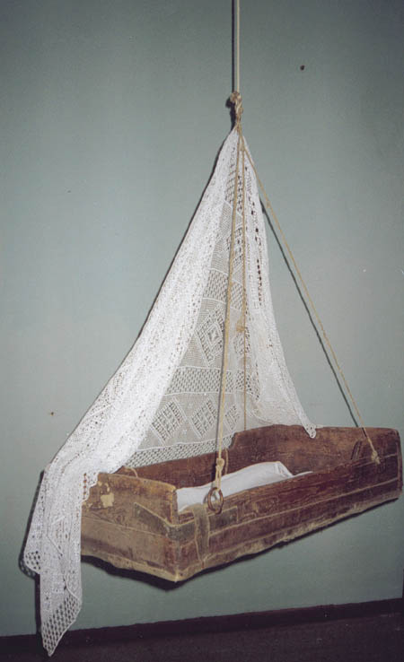
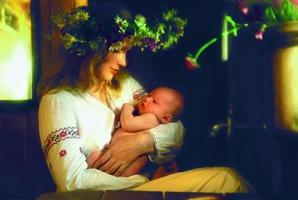
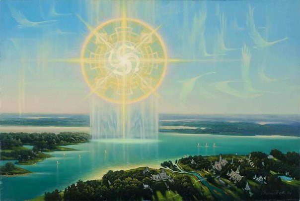

«Самое главное в жизни человека - это сама Жизнь,
превыше Жизни Человеческой может быть
только Долг перед Родом».
Слово Мудрости волхва Велимудра
РОЖДЕНИЕ – ЖИЗНЕННАЯ ЗАРЯ ЧЕЛОВЕКА
Зачатием чада молодые супруги занимались в дневное время, а не ночью, чтобы великая сила, идущая от Ярилы — Солнца (Имя Бога солнца — Ярила) освещала взаимные чувства и давало силы зачать светлое и желанное чадо. Присутствовал одухотворенный подход к продлению своего древнего Рода, к прекрасному и крепкому здоровью своих потомков. Мальчиков и девочек Родители воспитывали по особой системе, в соответствии с Устоями Рода.
Забота о ребёнке начиналась задолго до его появления. Испокон веку славяне старались оградить будущих матерей от всевозможных опасностей, в том числе и сверхъестественных. В последний же месяц перед родами ей не рекомендовалось выходить со двора, а лучше и из дому, чтобы Домовой и священный Огонь очага всегда могли прийти ей на помощь: жуткие истории рассказывались о злых колдунах, способных своим волшебством похитить дитя прямо из материнского чрева или подменить его детёнышем ведьмы – злобным уродцем… Одним словом, о наступившей беременности и тем более о сроке родов посторонним совсем незачем было знать.
Когда женщина беременна, ее мог целовать только муж, и он не должен был прикасаться к другой женщине, даже за ручку нельзя было трогать. Жена получает энергию от своего мужа, и если он пообщался с другой женщиной, то у него на руках остается энергия этой женщины. Энергия другой женщины переходит на супругу и вносит нежелательные изменения в ее организм. Можно касаться только дочерей.
Женщина, ждущая ребёнка, считалась любимицей Богов, способной приносить счастье. Её охотно приглашали в сады угоститься яблоками: если беременная отведает плода с молодой яблони, впервые принесшей урожай, эта яблоня весь свой век будет обильно плодоносить.… Но вот наступал срок ребёнку появиться на свет. Древние славяне ведали: рождение, как и смерть, нарушает невидимую границу между мирами умерших и живых. Понятно, что такому важному делу незачем было происходить вблизи людского жилища. У многих народов роженица удалялась в лес или в тундру, чтобы никому не повредить. Да и у славян рожали обычно не в доме, а в другом помещении, чаще всего – в хорошо истопленной бане. А чтобы материнское тело легче раскрылось и выпустило дитя, женщине расплетали волосы, в избе же раскрывали двери и сундуки, развязывали узлы, открывали замки.
Будущей матери обычно помогала немолодая женщина, опытная в подобных делах. Непременным условием было, чтобы она сама имела здоровых детей, желательно – мальчишек. Кроме того, при родах нередко присутствовал… муж. Славяне не видели ничего необычного в том, чтобы рядом с рожающей женщиной был сильный, надёжный, любимый и любящий человек.
Многие поступали по-другому. Около избы, где находилась роженица, стоял весь её Род мужчин, которым разрешалось носить оружие, и отгоняли от дверей всех любопытных, потому как тонкая грань становилась между мирами в момент рождения и всякая тварь могла проскользнуть в тело малыша и вредить ему и Роду. Бытовал и такой обычай, сходный с так называемой «кувадой» народов Океании: муж нередко кричал и стонал вместо жены. Зачем? Смысл «кувады» обширен, но, помимо прочего, исследователи пишут: тем самым муж вызывал на себя возможное внимание злых сил, отвлекая их от роженицы!
С древнейших времен, охватывающих многие тысячелетия, изначальная вера наших мудрых Предков была неотъемлемой частью повседневной жизни Славяно-Арийских Родов. Рождение ребенка совершалось с соблюдением определенных обрядов и ритуалов. Заботиться о будущем ребенке в Родах начинали задолго до появления на Божий Свет. Беременную женщину всячески защищали и оберегали от различных опасностей, как явных, так и навных. Для этого днем женщина подпоясывалась поясом заботливого и любящего супруга, ночью укрывалась его зипуном или плащом, дабы "мужняя сила" охраняла ее и чадо во чреве во время сна. Во время беременности любящий супруг всегда старался накормить свою любимую самыми наилучшими яствами, ибо испокон веков считается, что те изысканные яства, кои просит беременная женщина, на самом деле просит чадо во чреве матери у своего отца.
Замужняя женщина из любого Рода рожала ребенка в большой купели, изготовленной из дуба или березы, ибо, переходя из внутриутробной водной среды в воды внешнего мира, дитя чувствовало себя более спокойно и комфортно. Чтобы матери было легче рожать дитя, купель помещали в хорошо истопленную баню, по углам бани ставили раскрытые сундуки, но самое главное в этом древнем обряде было, что родившееся дитя принимал его родной отец. Женщины рожали в своей бане, в купели, то есть в воду. Чтобы матери было легче рожать, ей расплетали волосы. Ребенок из околоплодных вод выходил во внешние воды явного Мира. При этом он не испытывал «гравитационного удара», и родового стресса. Женщина находилась под опекой заботливого супруга, который принимал у нее плод взаимной любви.
После рождения ребенка прикладывали к груди, чтобы он познал первый источник Силы Жизни. Первый глоток молока включал в организме матери механизм отторжения плаценты, сигнализирующий о нормально прошедших родах.
Потом, но только утром, когда восходит Ярило, отец торжественно выносил из бани младенца, показывая его всем Небесным Богам, восходящему солнцу и Матери Природе, чтобы он познал другие источники Силы Жизни. После "представления" младенца стихиям жизни его переносили в жилище, где "представляли" ребенка Кумирам Древних Родовых Богов, Священному Огню домашнего очага и домовому, чтобы они покровительствовали и защищали нового члена Рода.

Чтобы покровительство Небесных и Родовых Богов, а также стихий было полным, люльку или колыбель для ребенка подвешивали посредине горницы, и она находилась как бы посередине между Небесами и Землей.
После того, как новорожденного познакомили с новым окружающим миром, ему перевязывали пуповину льняной нитью, сплетенной с волосами отца и матери и перерезали ее. «Привязать» – по-древнерусски «повить»; вот откуда «повитухи», «повивальные бабки». Пуповина перерезалась только после того, как ребенка показывали восходящему солнцу, делалось это для того, чтобы у младенца была долгая и светлая жизнь (круг жизни длился 144 года). Если утро было пасмурным, то пуповину перерезали на второй, третий и даже на седьмой день, пока ребенок не увидит восход и лучи Ярилы-Солнца.
Мать кормила ребенка грудью до 40 месяцев. Этот обряд был, по сути заключительным актом сотворения нового человека – от его зачатия в любви и до его рождения.

Пока ребенку не исполнился один год, его могли видеть только Родители и Жрецы Старой Веры, а также его родные дедушки и бабушки, ибо ребенок до исполнения одного года находился под защитой любящего отца и любящей матери, и Богов-Покровителей двух породненных Родов, а также Вышнего Бога – Рода Небесного.
Когда в древнем Роду Православных Староверов рождается мальчик, его сначала омывают в водах купели, в которой он родился, а потом очень тщательно обтирают рубахой матери, чтобы он рос внимательным и заботливым, как его мать, и пеленают в рубаху отца, чтобы он рос здоровым и сильным, как его отец. А если рождается девочка, то ее после купания в купели, обтирают отцовской рубахой, чтобы она обрела доброту, здоровье и выносливость и пеленают в рубаху матери, чтобы она переняла у матери всю ласку, любовь и внимание, а также способность вести домашнее хозяйство и рожать в будущем здоровых и сильных детей.
Существовали также и другие славянские обычаи - если рождался мальчик, пуповину перерезали на топорище или стреле, чтобы рос охотником и мастеровым. Если девочка – на веретене, чтобы росла рукодельницей.
На третий день после рождения каждый ребенок получал свое первое Изначальное Имя, определенное в соответствии с Древним Родовым Законом Любомира."
Вот так примерно все и происходило, к тому же в семьях было не менее девяти детей, а полный Божественный Круг – шестнадцать. Чистое сознание и любовь не давали даже мысли к изменам, разводам. Потому как высокий духовный уровень присутствовал в каждом, все жили и трудились во благо Рода!
Сегодня в современном обществе остался только обычай окунать младенца в воду (или, по крайней мере, обрызгивать), но и он отмечен у самых разных народов. В частности, так поступали скандинавы в эпоху викингов. Очень долгое время это объяснялось влиянием христианства. Однако потом сходные обычаи были зафиксированы у народов, никогда даже не слышавших о христианстве! В чём же тут дело? Даже уже учёные видят здесь отголосок древнейшего ритуала приобщения нового человека… Космосу. Как это делалось? Отец – глава семьи – торжественно выносил новорожденного и показывал его Небу и Солнцу (не садящемуся, но обязательно восходящему – на долгую жизнь!), Огню очага, Месяцу (опять-таки растущему, чтобы дитя хорошо росло), прикладывал к Земле-Матери – чтобы обменялись энергиями и, наконец, окунал в Воду (или обрызгивал, если было холодно). Таким образом, малыша «представляли» всем Божествам Вселенной, всем её стихиям, отдавая под их покровительство.

Использованные материалы: Славяно-Арийские Веды. Омск 2005 год; журналы: Ведическая культура: с № 1 по №16. Краснодар 2005 год.
Изображения - из ресурсов интернета.